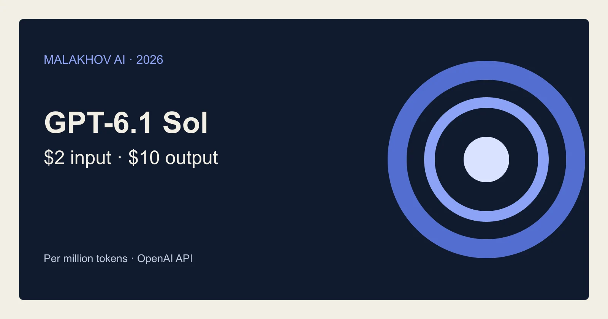
Лаборатории
OpenAI выпустила GPT-6.1 Sol с тарифами API $2 и $10
Новая Sol вышла в API и Codex: вход $2, выход $10 за миллион токенов. OpenAI показала улучшения в коде и работе с документами.
OpenAI
29 сент. 2026 г.Официальные анонсы от ведущих AI-компаний: новые модели, API, инструменты и исследовательские публикации.
109 материалов

Новая Sol вышла в API и Codex: вход $2, выход $10 за миллион токенов. OpenAI показала улучшения в коде и работе с документами.
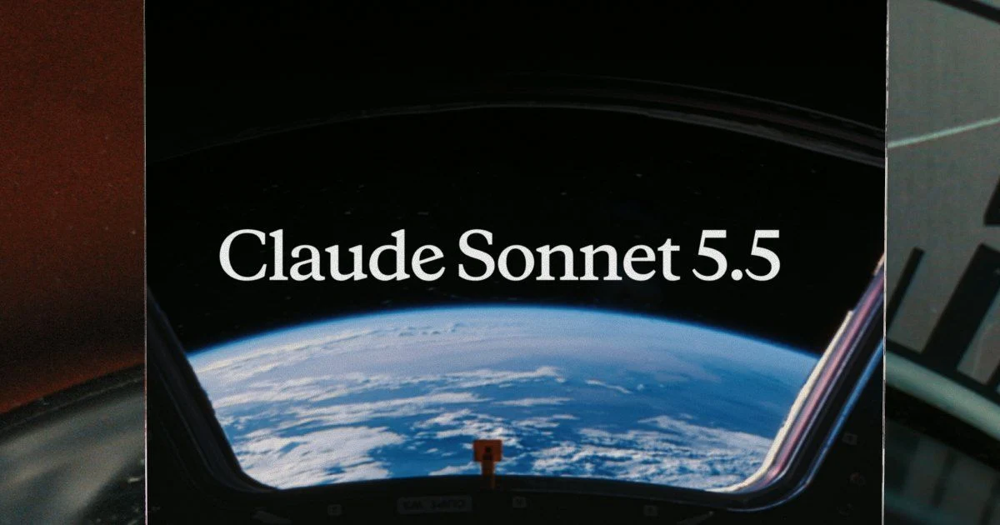
Anthropic обновила Sonnet: прежние тарифы за токены, более быстрая генерация и меньшие расходы на часть задач в тестах компании.
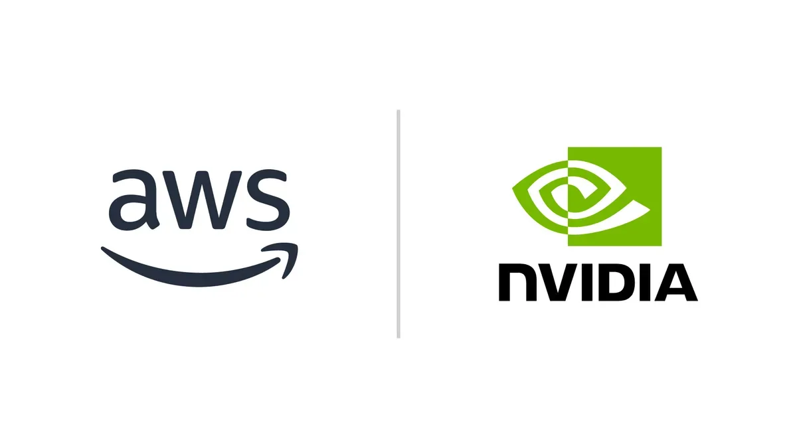
NVIDIA и AWS: новые GPU-инстансы, ускоренный векторный поиск и статус Exemplar Cloud.

Как GPT‑5 Pro помогла иммунологу найти объяснение трёхлетнему научному парадоксу

Как построить ИИ-ассистента для поиска пептидов на Amazon Bedrock

Azure Copilot Observability Agent: агентный мониторинг для облачных систем в общем доступе

AWS показала, как строить мультитенантные ИИ-агенты с изоляцией, уровнями обслуживания и контролем затрат на Bedrock AgentCore.

NVIDIA представила Agent Toolkit — открытую платформу для создания ИИ-агентов, которые можно настраивать и контролировать.

На DTW Ignite 2026 NVIDIA показала, как ИИ-агенты на базе NeMo и OpenShell делают сети самоуправляемыми.
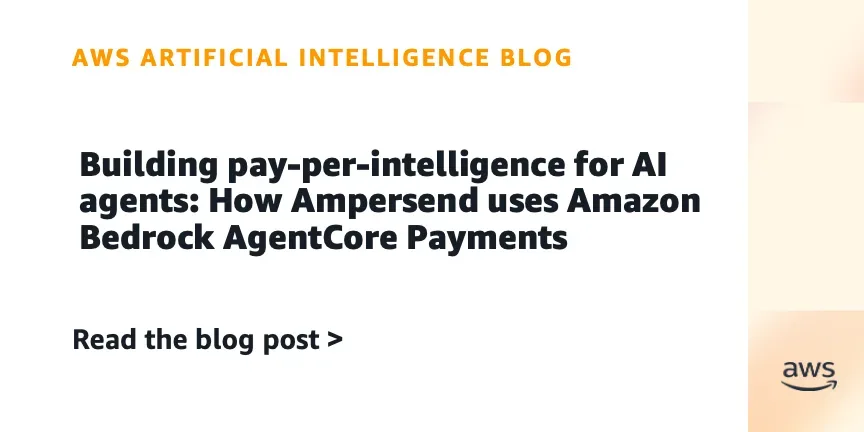
Ampersend интегрировала Amazon Bedrock AgentCore Payments для оплаты ИИ-агентами по запросу — без ручных подписок и контрактов.
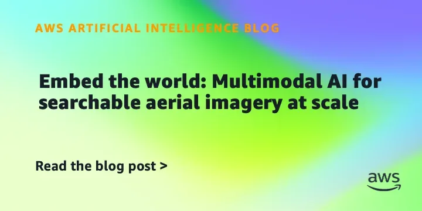
Семантический поиск по аэрофотоснимкам: Vexcel и AWS внедрили мультимодальные эмбеддинги для естественно-языковых запросов.
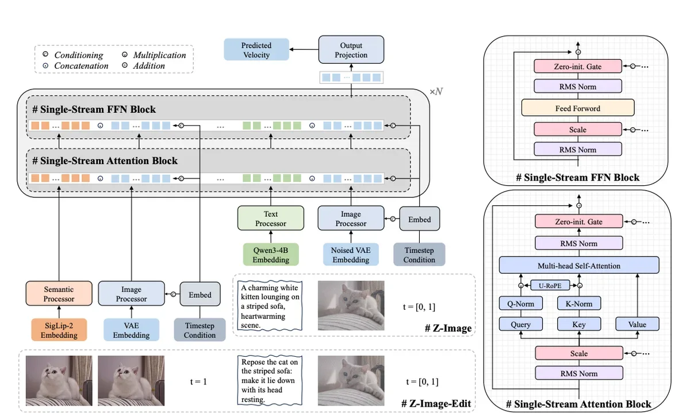
Запуск ComfyUI на SageMaker ИИ: пакетная генерация сотен изображений с почасовой оплатой GPU
Как ИИ-инфраструктура NVIDIA помогает учёным: 700 проектов, три примера
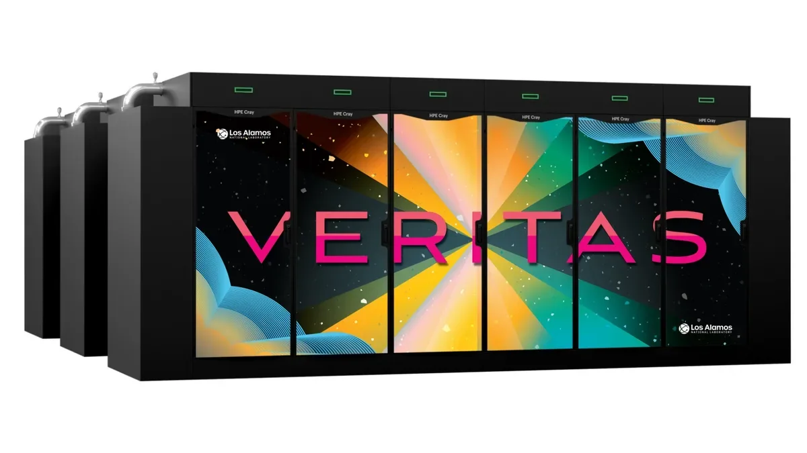
LANL строит суперкомпьютеры с NVIDIA Vera: 7x быстрее в задачах научного ИИ
Как волны становятся источником энергии для ИИ-инфраструктуры

Samsung Electronics развертывает ChatGPT и Codex для всех сотрудников — крупнейшее корпоративное внедрение OpenAI.
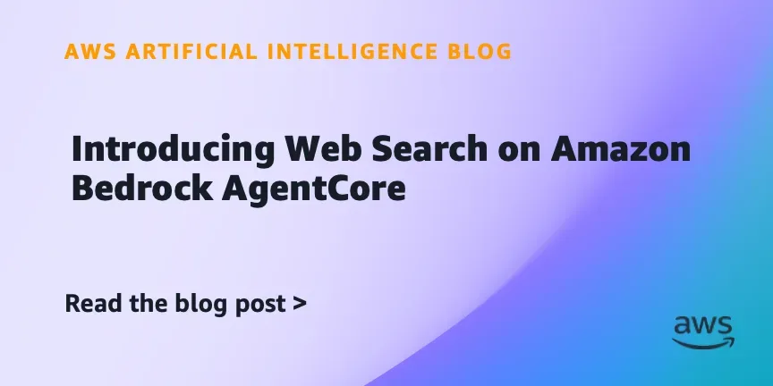
Amazon запустила веб-поиск для агентов ИИ на Bedrock AgentCore — без сторонних API и с приватностью внутри AWS.
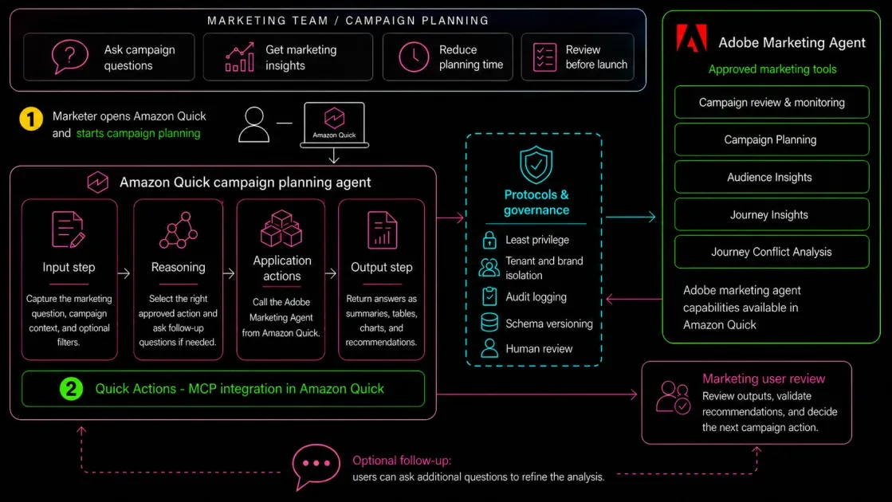
Adobe Marketing Agent для Amazon Quick: задавайте вопросы на естественном языке и получайте маркетинговые инсайты за секунды
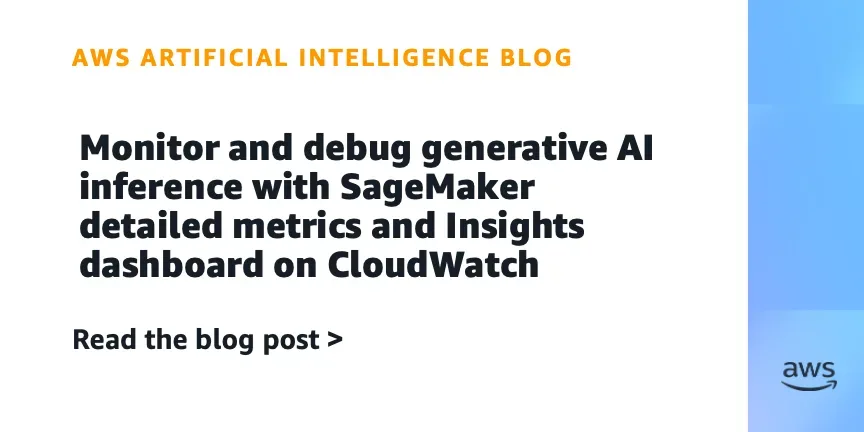
Более 100 детальных метрик и дашборд для мониторинга LLM-инференса в AWS SageMaker — без Grafana и Prometheus.
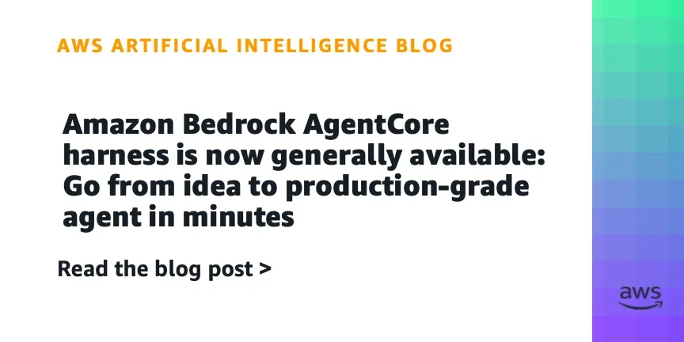
Два API-вызова — и агент работает в изолированном окружении с памятью и инструментами.

OpenAI добавила в ChatGPT Enterprise кредитную аналитику и гибкие лимиты для управления расходами.

Франция вводит в строй ИИ-инфраструктуру: 18 000 GB200, открытые модели и агенты в продакшне

Amazon SageMaker ИИ Async Inference: inline-запросы до 128 КБ без S3 — меньше кода, меньше затрат

Amazon Quick обзавёлся автономными агентами, работающими без участия пользователя, и лентой активности с умной приоритизацией.

AWS Context строит организационный граф знаний для безопасного доступа ИИ-агентов к данным и бизнес-правилам.

Новые инструменты Amazon Bedrock AgentCore: доступ к документам, веб-данным и обратная связь для улучшения агентов
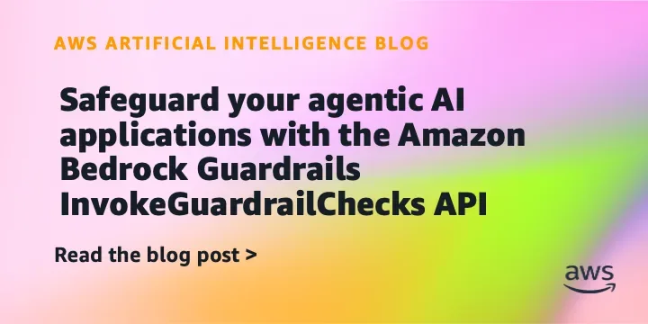
InvokeGuardrailChecks API: гибкие проверки безопасности без ресурсов для каждого шага агента
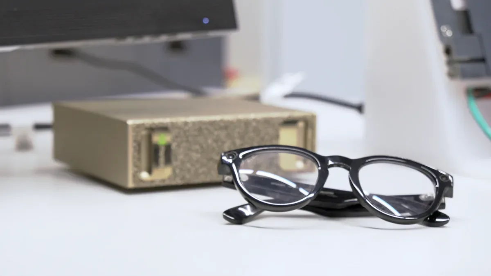
NVIDIA XR ИИ в публичной бете — фреймворк для создания ИИ-агентов в AR-очках с поддержкой видео, аудио и сенсоров.
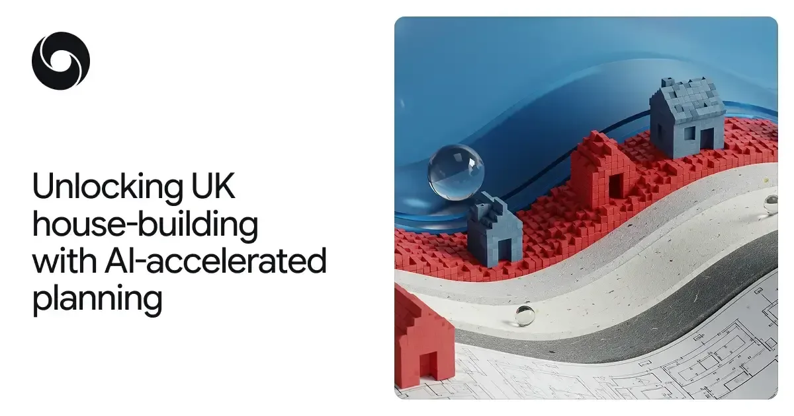
Gemini берётся за британскую бюрократию: ИИ-прототип обещает вдвое ускорить выдачу разрешений на стройку
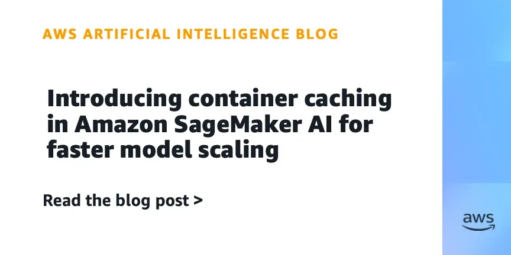
SageMaker ИИ кеширует контейнеры при старте новых инстансов — холодный старт ускорился вдвое